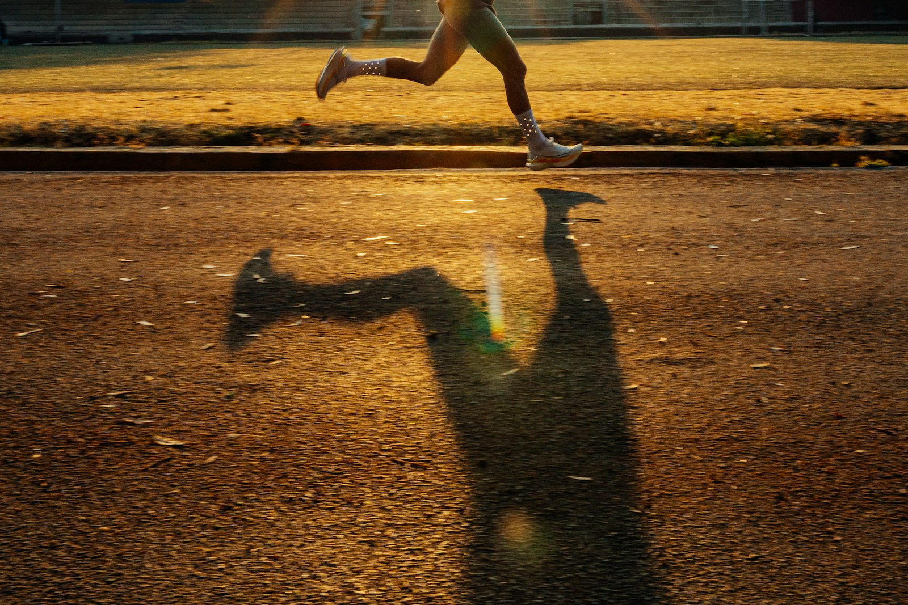

Vous connaissez la scène. Les deux tiers de la course se déroulent exactement comme prévu, l'allure est là, les sensations sont bonnes, et puis quelque chose se dérègle. La foulée se raccourcit, les épaules montent, le chrono au kilomètre part à la dérive. On finit en serrant les dents en se disant qu'on manquait de fond. Ce n'est pourtant pas tout à fait ça.
Ce n'est pas votre cylindrée qui lâche

Pendant longtemps, on a expliqué les performances d'endurance avec trois chiffres : la VO2 max, le seuil et l'économie de course. Trois valeurs mesurées en laboratoire, sur un coureur reposé, au bout de quelques minutes d'effort. Le problème saute aux yeux quand on y pense : personne ne craque à la douzième minute d'une course. On craque à la deuxième heure.
Des chercheurs en physiologie de l'endurance se sont donc mis à mesurer ces mêmes valeurs non plus au frais, mais après un long effort préalable. Et là, les classements se réorganisent. Deux coureurs qui affichaient les mêmes chiffres au départ n'ont plus du tout le même profil au bout de quatre-vingt-dix minutes. L'un a conservé presque toute son économie de course, l'autre en a perdu une grosse part.
La durabilité, la qualité dont personne ne parle
C'est cette capacité à résister à la dégradation qu'on appelle désormais la durabilité. Ce n'est pas la taille du moteur, c'est la façon dont il tient sous contrainte prolongée. Et c'est probablement ce qui explique le mieux ces fins de course où l'on a l'impression de courir avec les jambes de quelqu'un d'autre.
Ce qui se dégrade, concrètement : la foulée s'affaisse et coûte plus cher en oxygène pour la même vitesse, les muscles stabilisateurs lâchent prise, le cœur monte pour un effort identique, et la tête suit le mouvement. Rien de dramatique pris séparément. C'est le cumul qui fait le mur.

La bonne nouvelle, c'est que la durabilité se travaille, et pas forcément avec des séances plus dures. Plutôt l'inverse.
Trois façons de la travailler
Allonger la sortie longue avant de l'accélérer. C'est la mesure la plus efficace et la plus ennuyeuse à entendre. Passer d'une heure à une heure et quart, puis à une heure et demie, en gardant une allure où l'on peut parler, apporte davantage que d'ajouter une séance rapide de plus. On augmente d'environ dix pour cent par semaine, pas plus.
Finir en légère accélération. Sur la sortie longue, garder les dix ou quinze dernières minutes un cran au-dessus. Pas un sprint : juste une allure un peu soutenue, installée volontairement au moment où les jambes commencent à discuter. C'est exactement le geste qu'on veut savoir reproduire en course.


Placer quelques efforts en fin de sortie, pas au début. Trois ou quatre côtes courtes après une heure de course valent mieux que les mêmes côtes à froid. Le corps apprend à produire de l'intensité alors qu'il n'est déjà plus frais, et c'est précisément la situation de course. À réserver aux coureurs déjà réguliers, une fois toutes les deux semaines, pas davantage. Le reste du temps, on garde le principe de base rappelé dans progresser sans se blesser : la majorité du volume reste facile.
Et sur le Trail des Vignes ?

Le relief change la donne, parce que les descentes abîment les cuisses bien plus vite que le plat. Sur un parcours de coteaux, la dégradation arrive plus tôt et plus fort, et le renforcement musculaire devient un vrai allié du dernier tiers.
Deux réflexes valent le coup le jour J. Partir un cran en dessous de ce dont on se sent capable dans les premiers kilomètres, parce que ce qu'on gagne au début se paie toujours au double à la fin. Et ne pas attendre d'avoir faim ou soif pour se ravitailler, alors que tout va encore bien.
Si vous voulez tester la sortie longue qui finit en accélération, on la met au programme certains dimanches. Venez le dire au départ, on formera un petit groupe.